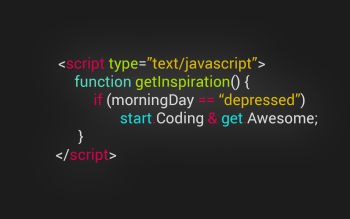
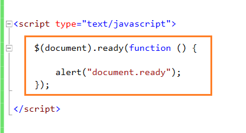
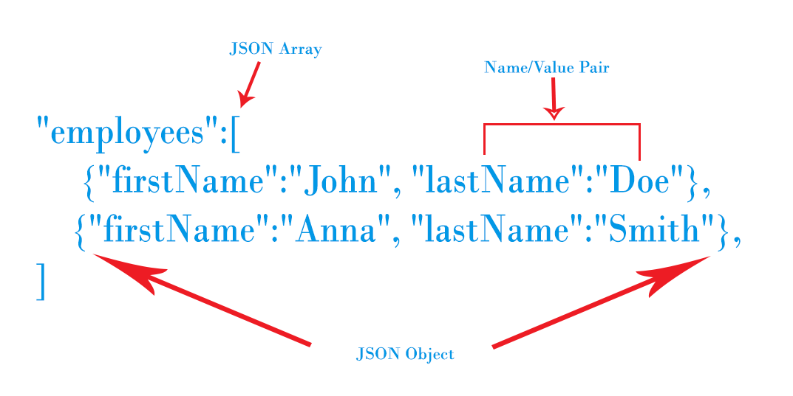

INTRO
"If you give a man a fish he is hungry again in an hour. If you teach him to catch a fish you do him a good turn."
We will discuss about some prerequisite skills needed to use Microsoft Computer Vision API briefly. There is a limit to introduce every single features, only few crucial part will be represented. You can refer the link for more detailed references.
About HTML

HTML means Hypertext Markup Language (HTML). Markup Language is used to manipulate text mostly in a text file. We can say HTML is the most widely known markup language.
HTML was made by Tim Berners-Lee in 1990. He himself is a founder of the World Wide Web. He invented HTML to share text more easily through the World Wide Web. The first HTML was static but thanks to development of other technology HTML5(The latest version of HTML) is quite different from its first version.
HTML is important because every web page has its HTML files. HTML files is a text file having a .html file extension on behalf of other text file extension with other various tags doing various roles on the web pages. HTML tags let web browser to know how it should format the text. You can google up some basic tags needed to make a basic web-page from HTML reference. Here you can find more about HTML.
About CSS

CSS means Cascading Style Sheets. It is style sheet language used to make a document written in a markup language look better aesthetically or user friendly. It describes how HTML elements will be displayed. You can add various kinds of styles on HTML page using CSS. You can fiddle with CSS features stored in files whose file extension is .css or just put link on HTML file to do put minor change on HTML file.
Here you can find more about CSS
https://www.w3schools.com/css/css_intro.aspthe site above is basic information required to getting started using CSS.
https://developer.mozilla.org/en-US/docs/Web/CSS/Referencethe site above is the reference so you can refer contents later.
About JavaScript
JavaScript sounds similar with JAVA language but it is different from JAVA language. This is interpreted run-time language which basically works on browser, which is different from JAVA language. JavaScript mostly works with HTML and CSS to produce World Wide Web contents mainly. JavaScript language controls HTML and CSS so it can make a web page dynamically.
JavaScript language got popular with its flexibility and development of web. It is being used in server side also in name of node.js. Here, we will see a simple example of JavaScript briefly but it is essential to be familiar with to use the API in the future.
JavaScript language is a programming language. What do we do when we start to learn a new programming language? Let's say Hello to the world! Here we go!
What? you were too surprised because it is too simple? Let's go further from here! Don't forget everybody started JavaScript with that simple "hello world"!
One of the best ways to learn JavaScript is to start writing a code by oneself and doing lots of experiments. So I will suggest some good websites which helps to learn JavaScript.
Here you can find more about JavaScript
https://www.codecademy.com/learn/javascripthttps://www.w3schools.com/js/
About jQuery
When you google some APIs to adopt to your application, you can run into some codes written in JavaScript like language but not in the exact JavaScript you learnt from the above. But the website providing the API will be saying “it is written in JavaScript”.
Mostly everything made by human beings have some usage. jQuery did not come out of the mother nature. jQuery was made by a person. JQuery is a cross-platform JavaScript library. Its syntax is way simpler than JavaScript so it is easier to traverse and control DOM elements, event handlers, and Ajax even. As we can see from its slogan above, we get to write less and do more. You will say it was worth to learn this when you jump into using Microsoft Computer Vision API later because with jQuery, you write less code literally and the structure is quite simple.
https://www.w3schools.com/jquery/You can learn basic jQuery from the link. After you are done with simple jQuery tutorial above, you must refer lots of features from https://api.jquery.com/. They classified their functions and features according to usage so it will be really helpful when you use jQuery to develop a program later. I watched a video about jQuery and it was also so helpful.
jQuery tutorial Video from Youtube by Derek BanasAbout JSON
JSON starts with J again and you can guess it has something to do with JavaScript.
Nice! You are right. JSON is JavaScript Object Notation. It is a way of data format. Before JSON came out XML was popular but it is harder and more complicated than JSON is. JSON is getting popular.
As you got familiar with JavaScript then you can feel comfortable with the word “Object”. We use objects a lot when we use JavaScript. You can get conception of JSON easily if you store data in a similar form of JavaScript Object. What you should not forget about is JSON is related with JavaScript in some ways but it is completely language independent so you can deal with JSON with other languages. This way of dealing with data is easy for people to read and understand and for system to parse and store.
You can easily learn how to use JSON visiting the website below. JSON is quite easy and intuitive to deal with so I will only post one source.
http://www.json.org/Now you are ready to jump into the world of Microsoft Computer Vision API. Congrats again!